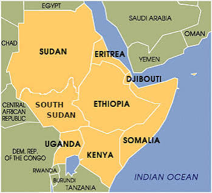

Independent research for important public decisions
Ideas and evidence for a more peaceful, resilient, and prosperous Horn of Africa
The Horn of Africa Institute produces independent research, develops practical policy options, and uses strategic foresight to assess the political, economic, security, environmental, and technological changes shaping the region.
Institutional purpose
Connect regional knowledge, rigorous research, and sound policy judgment.Visit the Center →About the Institute
Independent analysis grounded in regional realities
Political conflict, institutional capacity, economic change, climate stress, and technological transformation interact across the Horn of Africa. The Institute examines how these challenges interact across institutions, countries, and policy sectors.
Our work combines regional knowledge with qualitative research, quantitative analysis, and computational methods. We seek to clarify strategic choices, identify feasible policy options, and strengthen informed public debate.
Learn about our mission →Research programs
Focused research on the region’s defining policy challenges
Three research programs organize the Institute’s substantive work. Each program connects analysis with policy development and implementation.
Peace, Conflict, and Regional Security
Security institutions, political settlements, peacebuilding, civilian protection, and the regional dynamics of conflict.
Explore the program →Research program 02Economic Development and Governance
State capability, inclusive growth, public finance, financial systems, infrastructure, trade, and digital transformation.
Explore the program →Research program 03Climate Resilience and Natural Resources
Climate security, drought preparedness, water governance, environmental sustainability, and adaptation.
Explore the program →Strategic Foresight and Analytics Center
Anticipating emerging risks before they become crises
The Strategic Foresight and Analytics Center provides the Institute’s forecasting, modeling, geospatial analysis, and decision-support capabilities. It supports every research program through data analysis, simulation, and scenario design.
Visit the CenterCross-program initiative
Red Sea, Gulf, and Regional Connectivity
The initiative examines how Gulf engagement, maritime routes, ports, infrastructure finance, food and energy systems, migration, security partnerships, and diplomatic competition reshape political authority, economic development, and regional cooperation across the Horn of Africa.
Explore the initiative →The Horn of Africa in regional context
A region connected by security, commerce, climate, and migration
The Horn of Africa sits at the intersection of the Red Sea, Gulf of Aden, Indian Ocean, Nile Basin, and East African interior. Developments within one country frequently reshape conditions across the region. Effective policy therefore requires regional analysis alongside country-specific evidence and institutional analysis.

Research areas
Key questions shaping the Horn of Africa
The Institute examines governance, institutional capacity, investment, security, climate resilience, and technological change across the region.
Work with the Institute
Research and analysis for important public decisions
The Institute considers research partnerships, institutional briefings, strategic assessments, technical assistance, training, and policy dialogue.